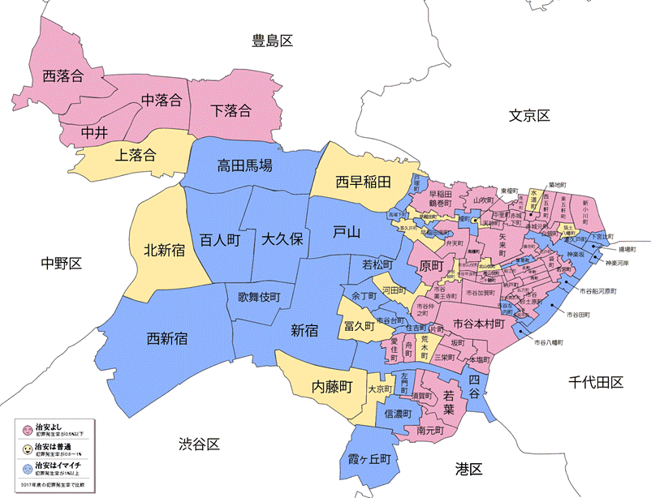
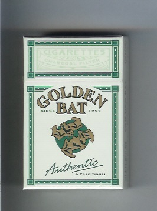
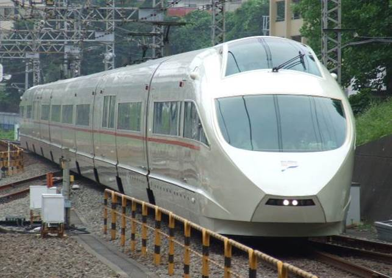
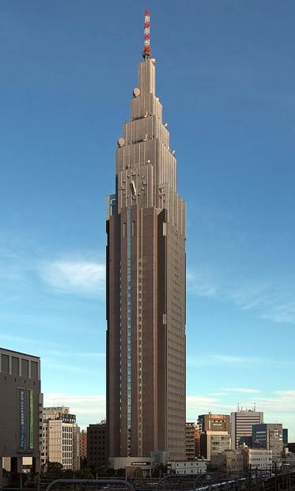

目录
1. 出典：
Ø 牛込区
Ø 金蝙蝠牌香烟
Ø 小田急
Ø NTT代代木大厦
2. 剧情：
Ø 剧情简介
1. 出典：
位于新宿的东北部，也是现时新宿区的前身。神楽坂、市谷和早稲田都位于此区。

Figure 1. 位于上图右侧红色区域的部分大体上位于牛込区，
Forest的剧情发生在中间的新宿附近
在1906年成立的香烟品牌“金蝙蝠”，是一个非常长寿的香烟品牌（于2006年庆祝其成立100周年）。目前20个装的价格为130日元。在其悠久的历史中改过两次名字，并且还经常进行香烟盒的设计更改。
从灰流的话中可以看出，吸这种烟的人通常很贫穷或很奇怪。经常提到的著名人物太宰治和芥川龙之介都是该香烟的爱好者，且是都死于自杀。
另外，有一个城市传说，每支香烟都是用制造过程中多余的叶子制成的，而且味道不同，但这是一个谎言。实际上，因为这种烟使用的是不常用的叶脉，因此味道会因生产批次和湿度而有很大差异。

Figure 2. 金蝙蝠烟盒
小田急是关东22家私铁业者共同使用的交通卡系统“PASMO”之加盟成员之一。该公司于2005年3月将最短票价降低为3公里之内120日圆，是日本票价第二便宜的铁路公司，仅次于1997年进行降价的京王电铁（4公里之内120日圆，票价虽然相同但维持最低票价的里程较长，因此单位里程的平均票价最低）。
小田急将旗下的特急列车统称为浪漫特快（ロマンスカー）系列，并且将其作为企业形象的象征与标语，例如该公司的广告口号“きょう、ロマンスカーで。”（今天、搭乘浪漫特快……）就是一例。
小田急电铁是另一家大手私铁业者相模铁道之上游控股公司相铁控股的最大股东。至于与小田急电铁关系密切的江之岛电铁、箱根登山铁道与大山观光电铁的铁路公司，则是母集团小田急集团的关系企业。
小田急在每年10月的周末，都会在海老名电车基地内举办针对铁道迷的活动“家庭铁道展”。

Figure 3. 小田急列车
被称为時計塔的建筑，在Kako一章中曾经出现过。NTT DoCoMo代代木大厦是位于日本东京都涩谷区千駄谷的摩天大楼，由日本行动通讯公司NTT DoCoMo兴建及使用，1997年12月动工、2000年9月竣工。按照屋顶高度计算，该建筑是东京都第四高楼（240米），仅次于中城大厦、虎之门之丘与东京都厅舍；若按照含天线的总高度计算，它是东京都最高的摩天大楼（272米）。
NTT大厦拥有像帝国大厦等美国纽约的摩天大楼的设计外观。与一般商业大楼不同，它是NTT DoCoMo的业务用大楼，仅限公司相关人员进入。大楼北侧设有直径约15米的大时钟，是在2002年为纪念NTT DoCoMo成立十周年而设置，由星辰表集团旗下的CITIZEN TIC设计，在2012年麦加皇家钟塔饭店落成前，曾是世界最高的钟楼。

Figure 4. 高耸的时钟塔
九月到了灰流的住处，发生了H场景。过程中九月试图掐死灰流，但在灰流无声的警告下作罢，趴在灰流胸口大哭。